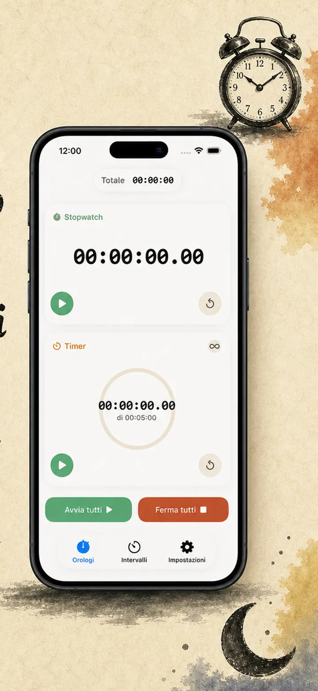
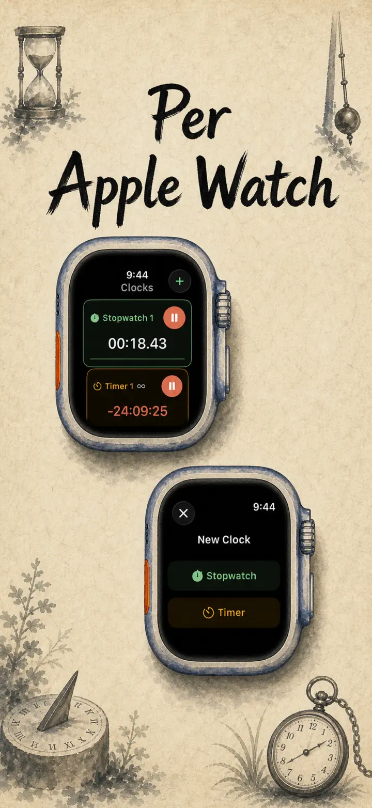
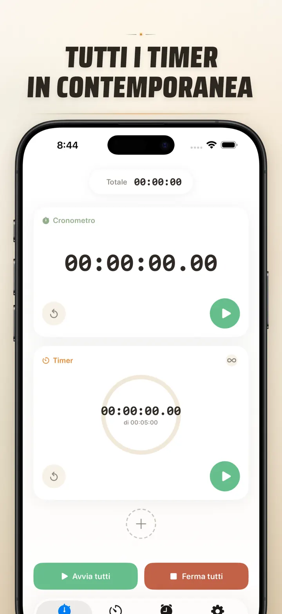
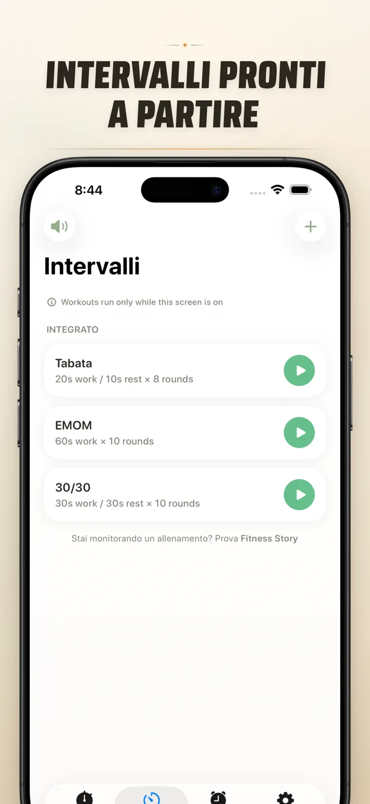
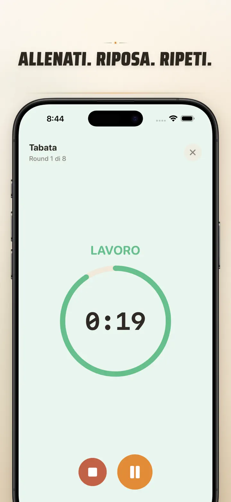
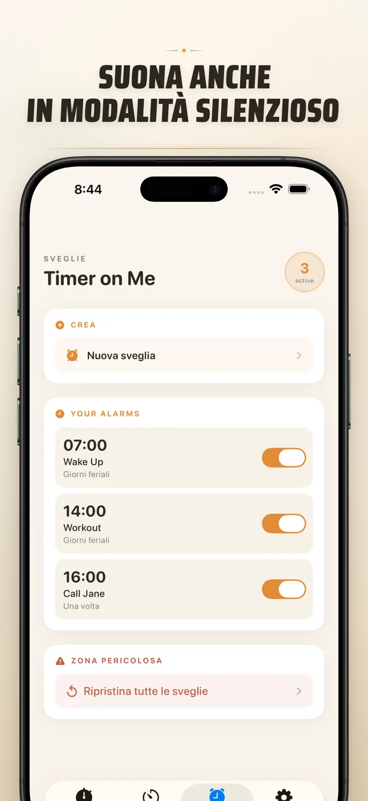

Timer on Me
Timer, Sveglia, Crono, HIIT
Ora con sveglie con data: imposta una sveglia una tantum per qualsiasi data e ora, con sveglie ricorrenti, 50 timer, HIIT & Tabata e Apple Watch.
Scarica dall’App StoreInformazioni sull’app
Timer on Me è il tuo multi-timer e cronometro per iPhone, iPad e Apple Watch. Fino a 50 timer indipendenti in contemporanea, intervalli di precisione e sveglie che suonano davvero — anche a iPhone bloccato o con l'app chiusa.
SVEGLIE
- Sveglie e promemoria con etichette personalizzate e programmazione per giorni della settimana
- Powered by AlarmKit — suonano anche con iPhone bloccato o Timer on Me chiusa
- Snooze configurabile (3 / 5 / 9 / 15 / 30 minuti) o disattivato
- Scegli tra le suonerie integrate o importa i tuoi suoni
- Attiva/disattiva con un tap dal tab Sveglie dedicato
ALLENAMENTI A INTERVALLI
- Preset Tabata, EMOM e 30/30 integrati — due tap e si parte
- Editor intervalli personalizzato: lavoro, recupero e round in minuti e secondi
- Modalità allenamento a tutto schermo con cambi di colore per fase, mute opzionale
- Pausa, skip e ripresa durante la sessione senza perdere il punto
APPLE WATCH
- Vera app nativa watchOS, non un semplice guscio di sincronizzazione
- Più cronometri e timer al polso contemporaneamente
- Cronometro al centesimo di secondo
- Complicazioni dedicate per un avvio con un tap
- Funziona in autonomia anche senza iPhone vicino
50 TIMER INSIEME
- Fino a 50 timer e cronometri indipendenti in un'unica sessione
- Start, stop e reset singoli o a gruppi
- Ripetizione automatica per i round ciclici
- I timer continuano oltre lo zero per contare il tempo extra
- Barre di avanzamento: 50% giallo, 10% rosso
- Riordino con trascinamento e nomi personalizzati
AVVISI AFFIDABILI
- AlarmKit: le sveglie suonano anche con iPhone bloccato o app chiusa
- Dynamic Island e Live Activity per un colpo d'occhio veloce
- Widget Home: taglia piccola, media e grande
- Suonerie integrate: campane, uccelli, telefoni vintage
- Anteprima suoneria con un tap
- Modalità "Mantieni schermo attivo" per le sessioni lunghe
PERSONALIZZA E CONDIVIDI
- Mostra o nascondi decimali, totali e percentuali
- Salva e sovrascrivi sessioni, le richiami in un tap
- Esporta in CSV, JSON o testo semplice
- Condividi con colleghi, studenti o allenatore
PER iPhone, iPad & APPLE WATCH
- Layout adattivi per ogni schermo
- Split View su iPad
- 34 lingue disponibili
PERFETTO PER
- HIIT, Tabata, CrossFit e allenamento a circuito
- Round di boxe e arti marziali
- Pomodoro per studio, esami universitari e concorsi
- Pasta al dente, caffè moka, uova, lievitazione e forno
- Yoga, pilates, meditazione e respirazione
- Prove di presentazione e studio di uno strumento
- Lezioni, workshop e attività di gruppo
- Giochi da tavolo e serate in compagnia
Scarica Timer on Me e prenditi il controllo di ogni minuto — in palestra, in ufficio o a casa.
Informativa sulla privacy: https://masawata.net/privacy-policy.html Termini di servizio: https://www.apple.com/legal/internet-services/itunes/dev/stdeula/
Screenshot






Timer on Me
Ora con sveglie con data: imposta una sveglia una tantum per qualsiasi data e ora, con sveglie ricorrenti, 50 timer, HIIT & Tabata e Apple Watch.
Scarica dall’App Store